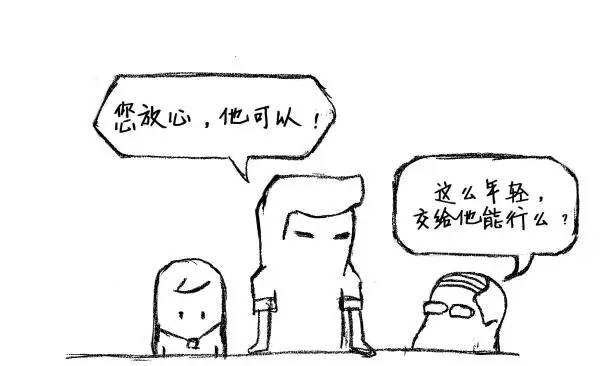

2017年の転職シーズンがまた始まった。資本の冬の風が吹き荒れ、毎日のように各社の賃金未払いやCEOの逃亡、大企業の比例リストラの情報を目にするにもかかわらず、そうした情報がプログラマーの落ち着かない心を止められないことは否定できない。
画像は本文とは関係ありません
多くの経営者は、なぜプログラマーが辞めるのかを理解できず、採用した人間に契約精神がないとか、プログラマーは各自が自分を過大評価しているなどと単純に決めつけている。さらに、旧正月明けに退職するプログラマーは道徳的に欠陥があるとさえ考えている。会社は週休2日、年末ボーナス、フレックスタイム、昇給、各種福利厚生を与えたのに、それでもプログラマーの退職する気持ちを引き留められない原因は会社にはなく、プログラマー自身の問題にあると単純に考えている。本当にそうだろうか？
共感力を持とう、同じ目線で考えよう
必要なのは、双方の共感だ
会社の立場からすれば、従業員に与える福利厚生の多さは会社の収益によって決まる。確か去年の調査レポートに、平均すると年に一度昇給できる企業は50%未満で、年末ボーナスを支給できる企業はごくわずかだと書いてあったのをぼんやりと覚えている。これは大げさかもしれないが、現実だ。創業者が会社と運命共同体である場合を除けば、本当に会社と縛られる必要がある者などいない。創業者でさえ、会社と生死を共にできるとは限らない。今の安定は、外部が提示する条件が心の中の期待に達していないだけだ。そしてその条件は、必ずしも給与や待遇・福利厚生だけとは限らない。多くのプログラマーを見てきたが、20Kをもらえる能力がありながら、18Kや16Kの条件を受け入れて元の会社に留まることもできる。それは会社が他の面で補償してくれるからだ。プログラマーはその3、4千元を本当に気にしているだろうか？ そうではない！ 彼らが気にしているのは、自分の好きな仕事ができ、学びたいものを学べることだ。ただ給料のために、同じような形の車輪をひたすら作り続けることではない。今の社会は非常に現実的だが、だからといって誰の心にも自分が求める環境がないわけではない。福利厚生だけでプログラマーを引き留め、彼らが本当に気にしている条件を無視すれば、退職は必然となる。どの会社も、会社が困難に直面したときには従業員に共感を求める。では、従業員が何かを必要とするとき、会社も共感を示せるだろうか？ 会社の経営者に聞いてみれば、比較すれば結論は出るだろう。
正しい人に従うことが、とても重要だ

優れたリーダーは、従業員とともに成長する
転職理由の割合のうち、直属の上司に起因する部分は非常に大きい。この部分こそ、会社が最も理解できない点だ。退職する人の多くは、直属の上司への不満を退職理由として表明することはほとんどない。プログラマーはほとんどが理性的だが、感情面がないわけではない。信頼でき、従う価値があり、学ぶ価値のある上司は、プログラマーにとって単なる給与の増額よりも重要なことが多い。上司の人格的魅力がプログラマーに与える影響は非常に大きい。会社にとって、彼らは単なる中間管理職に過ぎないが、無視してはならないのは、こうした人材こそが会社の精鋭であり基盤だということだ。彼らが会社のプロジェクトの安定と人員の安定にもたらす影響は、会社が与える福利厚生をはるかに超えている。このような人々の職業的素養や道徳的品質は、プロジェクトの方向性と従業員の定着率に直接関わっている。
流動があってこそ、成長がある
より高い山を目指す
人員の流動は、会社にとって悪いこととは言えない。少なくとも、会社が絶えず自らを改善し続けるきっかけになる。プログラマーにとって、学びに終わりはない。会社が自分の学びのペースについていけなくなったとき、それは既に自分に適した成長の場ではなくなったことを意味し、その時が会社を去る時だ。これは待遇や福利厚生とは一切関係なく、ただ単にマッチしなくなっただけだ。それならば、お互いに幸運を祈り合うしかない。従業員の不忠実さを悔やむ必要はない。
出典：小板（今日头条）